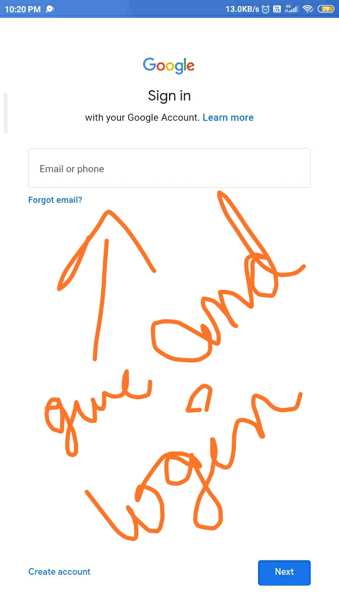

Open tool here
so do it as the following steps and even you have past experience so you can do it so easy i guess
step -1 : open google chrome or gmail or what you prefer to login. i'll suggest google chrome
step-2 as shown just go to that section
here im chaging the picture so set in past cz i guess it may get you trouble so we shall re-place it later about DP
now do it careful

you know id and pass already right
even so im putting here
mail : weshallstudynow@gmail.com
pass: 1Potato2Icecream.
type it and goto that site as shown there
click on login
click on google

choose weshallstudynow account

for make it more easy to use follow the below steps to avoid most risk so in the end after you enter study tool there is no trouble cz its like jarvis or your Artificial intellegence assistant ok
use it and ace you study you can use it as like you want
if you have any doubts tell me by sending picture of it or tell it i'll clear it to you